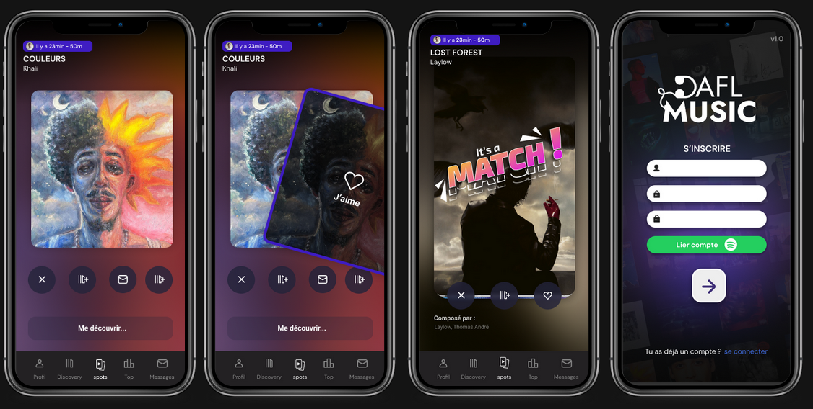
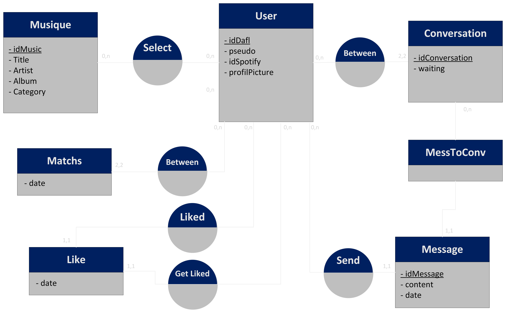

Technologies utilisées: Flutter, PHP Slim, SQL
Année de réalisation: 2022-2023
Note finale: 13.5/20
DAFL Music est un projet que j'ai réalisé à l'aide de 3 de mes camarades dans le cadre de notre BUT Informatique de deuxième année.
Le concept du projet s'inspire de Tinder et de Spotify. Par exemple, vous avez installé l'application mobile DAFL Music et vous croisez quelqu'un qui a aussi l'application, par conséquent cela va afficher la musique qu'écoutait l'utilisateur que vous avez croisé sur votre téléphone.
Cela permet de découvrir de nouveaux sons et de nouveaux artistes.
Une fois que vous avez aimé le son de la personne que vous avez croisé, si cette personne a aussi aimé le son que vous avez écoutez quand vous vous êtes croisés vous allez pouvoir discuter ensemble, afin de faire de nouvelles découvertes de sons et d'artistes.
Ce projet était un vrai challenge technique, car nous avons utilisé une technologie que nous ne connaissions pas, Flutter, et nous devions réalisés différents serveurs comme le serveur de messagerie.
Nous avons plutôt bien réussi le projet, mais nous avons pas eu le temps de le finir malheuresement.
Voici ci-dessous quelques images de notre projet, ainsi que le lien du répo :
DAFL Music
Vues :

MCD de notre application :
